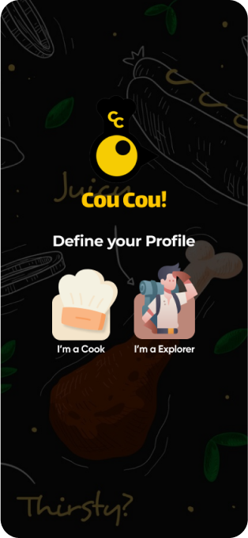
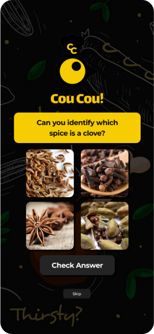
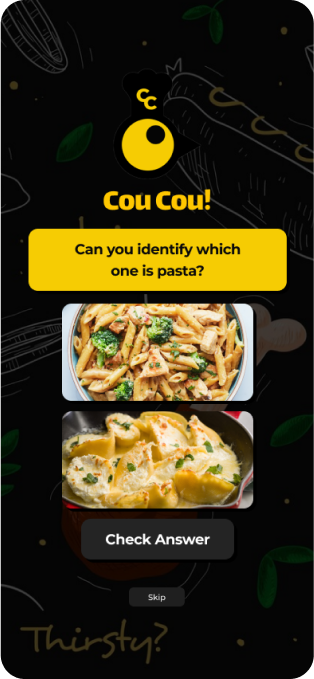

The ultimate social hub
for foodies.
Full-Time Role FY 2024-25

In today’s fast-paced world, our rich Indian food heritage is fading as soulful recipes from home cooks go unrecognized.
Traditional cooking, a blend of culture, history, and love, is overshadowed by quick meals and busy lifestyles.
That’s why we built CouCou.
a platform to celebrate home cooks and preserve the authenticity of Indian cuisine.


Who’s It For?
- For the home cooks who deserve to be seen, appreciated, and celebrated.
- For food lovers who crave authentic, heartwarming meals and the stories behind them.
Our Solutions
- Showcase their talents: Share recipes, tips, and stories with a community that appreciates their art.
- Keep motivated: Our reward system turns their hard work into recognition, keeping their passion alive.
- Build connections: They’re no longer just cooking—they’re inspiring a community of food lovers.
The app's user interface
keeps recipes organized and adds fun with cooking games and handy tips.
Onboarding
The app kicks off with fun games, giving users an engaging preview of what’s inside.
  Home Feed
When users enter the home screen, they’ll find features like:
- Top Eats Nearby
- Taste the World
- Festival Flavors
Recipe Upload & View
Uploading recipes is seamless with structured sections and a voice note feature for personal tips. The organized recipe view includes nutritional facts and suggests similar recipes, making it beginner-friendly and inspiring.
App Gamification
The CouCou! Zone features different levels with exciting gifts, keeping users engaged through daily tasks and rewards.
The CouCou! Zone features different levels with exciting gifts,
keeping users engaged through daily tasks and rewards.

Community Building
The CouCou! community offers a variety of groups where users can invite others, share recipes, learn new skills, and stay connected.
- Seamless connections without overwhelming users.
- Relevant recipe suggestions tailored to user behavior.
- Balanced rich content with easy access to features.
- Streamlined uploads, ensuring no missed steps.
- Design for mobile with responsive layouts and fast performance.
- Prioritize easy group interactions and sharing.
- Use cohesive colors, fonts, and icons (Design System).
- Better Understanding of Gamification and Reward System.